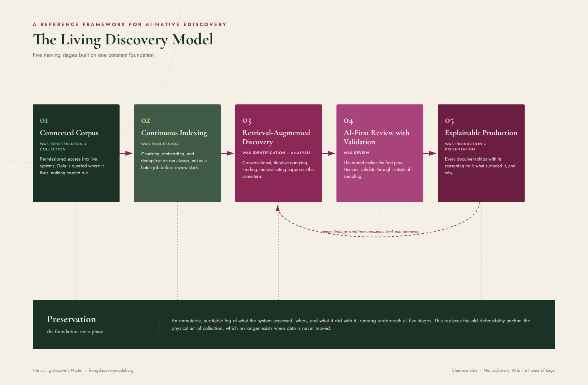

EDRM was built in 2005 for a world where data had to move before anyone could look at it. This model is built for a world where a governed LLM can query a corporation's live systems in place. Five moving stages, one constant foundation.
Identification, collection, processing, review, analysis, production, presentation, each was a discrete event because a document had to be physically copied out of a live system before a human or a keyword search could touch it. Take that constraint away, and the phases built on top of it collapse into something faster, and something new has to take their place.

The foundation underneath all five stages, not a phase in the sequence. An immutable, auditable log of what the system accessed, when, and what it did with it. This replaces the old defensibility anchor, the physical act of collection, which no longer exists once data is never moved.
Today's recall and precision statistics were built for a search that runs once against a static index. They don't map cleanly onto a conversational, iterative, non-deterministic retrieval process. Whoever solves validation for AI-native discovery first sets the standard the rest of the industry gets measured against.